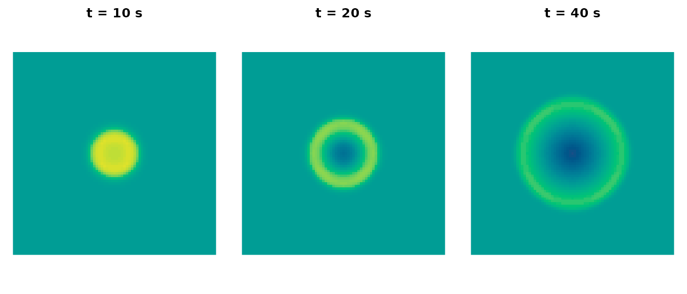
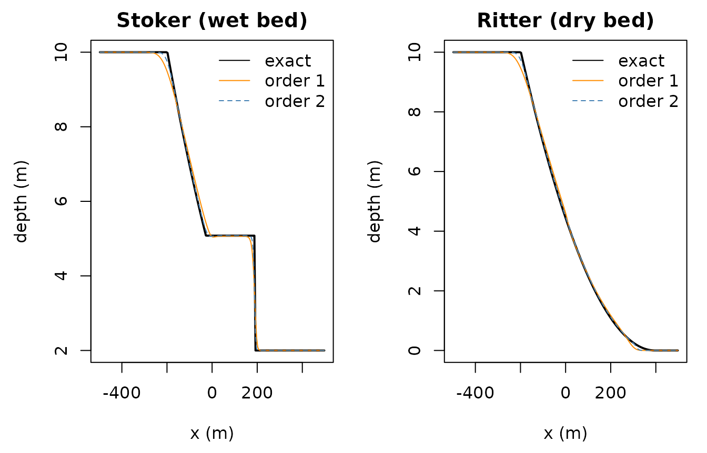
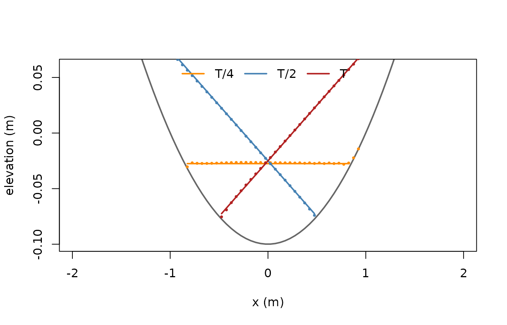
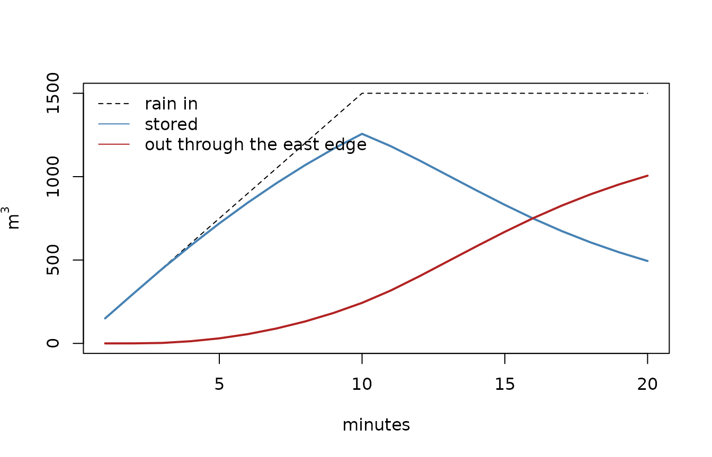
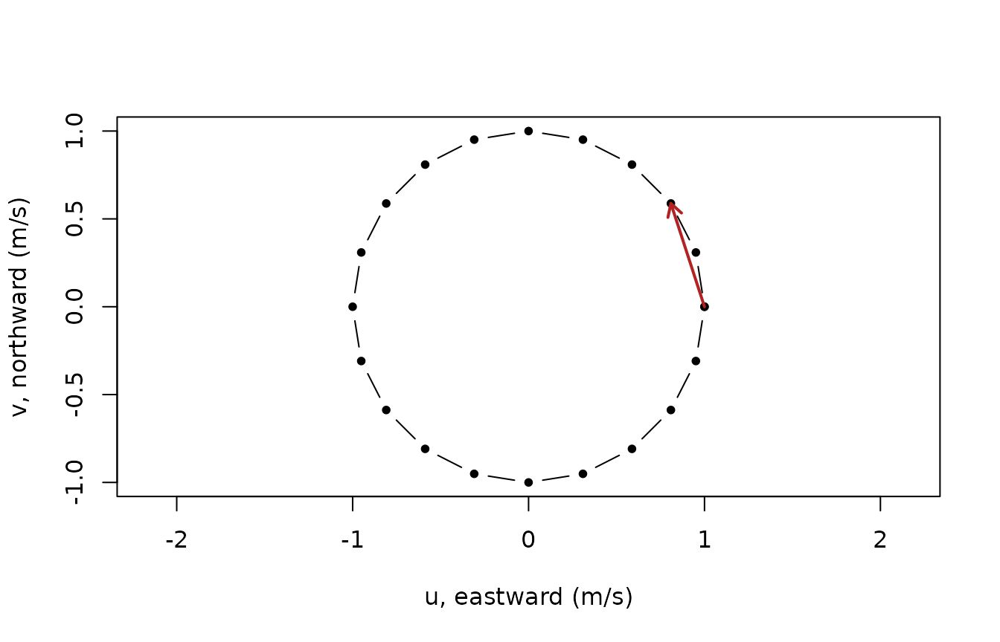
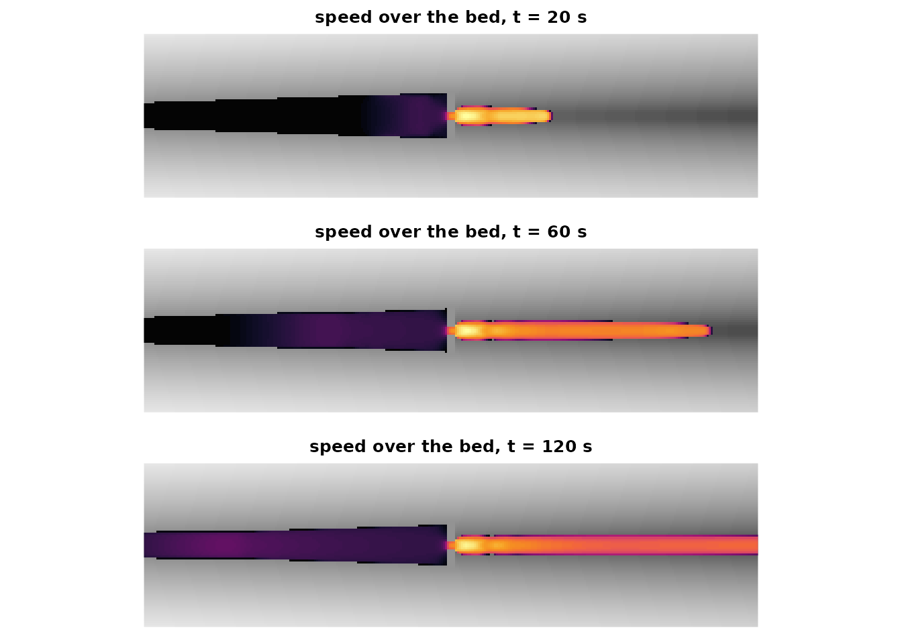

shallows solves the two-dimensional shallow water (Saint-Venant) equations on a regular grid: the same grid as a raster DEM. This vignette goes through the model, how to set up and run it, how to read what comes back, and how far the results can be trusted, with each claim checked by a small run you can repeat.
The model
The unknowns are depth and momentum on each cell, over a bed :
with rain (m/s), Manning roughness and Coriolis parameter . The scheme is a finite volume method with the HLL Riemann solver and the hydrostatic reconstruction of Audusse et al. (2004). That reconstruction gives the two properties that matter most on real terrain:
- Well balanced. Water at rest over any bed stays at rest to round-off, so the bed slope term never invents currents.
- Positive. Depth never goes negative under the time step limit, so cells wet and dry with no special cases.
order = 1 is piecewise constant in space with forward
Euler in time. order = 2 (the default) adds MUSCL
reconstruction with the minmod limiter and Heun’s method (SSP-RK2) in
time. Friction is semi-implicit, rotation is applied exactly in Strang
half steps, and the time step comes from the CFL condition. The kernel
is about 400 lines of C++ in src/swe.cpp, with OpenMP over
the flux sweeps.
A state and a run
A simulation needs a state, made by sw_state(), and
output times given to sw_run(). Matrices are oriented like
a raster: row 1 is the north edge, column 1 the west edge,
hu is eastward momentum and hv is momentum
towards increasing row number (southward on a north-up grid).
Plots here use ximage, which draws a
matrix in that same raster order, placed by an extent given as
c(xmin, xmax, ymin, ymax); a state built from a DEM carries
its extent in the same form.
Here is a 2 m hump of water in the middle of a flat 1 m deep pool, 10 m cells, with walls on every edge:
n <- 81; dx <- 10
xy <- (seq_len(n) - (n + 1) / 2) * dx
r2 <- outer(xy^2, xy^2, "+")
s <- sw_state(z = matrix(0, n, n), h = 1 + 2 * exp(-r2 / 50^2), dx = dx)
run <- sw_run(s, times = c(10, 20, 40))
run
#> shallows run: 81 x 81 cells, 3 frames to t = 40 s, 85 steps
#> max |mass budget error| (relative): 4.16e-15The result holds one depth and momentum matrix per output time, and a diagnostics table:
str(run$h, max.level = 1)
#> List of 3
#> $ : num [1:81, 1:81] 1 1 1 1 1 1 1 1 1 1 ...
#> $ : num [1:81, 1:81] 1 1 1 1 1 1 1 1 1 1 ...
#> $ : num [1:81, 1:81] 1 1 1 1 1 1 1 1 1 1 ...
run$diag
#> time volume outflow rain steps dt_min dt_max clipped budget_error
#> 1 10 671808 0 0 24 0.4147509 0.4455963 0 -2.444722e-09
#> 2 20 671808 0 0 46 0.4147509 0.4890985 0 -1.746230e-09
#> 3 40 671808 0 0 85 0.4147509 0.5404260 0 -2.793968e-09
#> rel_budget_error
#> 1 -3.639019e-15
#> 2 -2.599299e-15
#> 3 -4.158879e-15| column | meaning |
|---|---|
volume |
water on the grid (m^3) |
outflow, rain
|
cumulative volume out through open edges, and in as rain |
steps, dt_min, dt_max
|
cumulative time steps and the range of stable steps |
clipped |
volume removed by clipping negative depths (should be 0) |
budget_error |
volume - (initial + rain - outflow) |
The budget is the first thing to look at after any run: it should close to round-off, and here it does.
op <- par(mfrow = c(1, 3), mar = c(1, 1, 2, 1))
for (k in 1:3) {
ximage::ximage(run$h[[k]], extent = c(0, n * dx, 0, n * dx), zlim = c(0.4, 1.6),
col = hcl.colors(96, "viridis"), asp = 1, axes = FALSE,
main = sprintf("t = %g s", run$diag$time[k]))
}
par(op)Dam breaks: shocks and rarefactions
A dam break along one row of cells has an exact solution. With water downstream (Stoker) the solution is a rarefaction, a constant middle state and a shock; onto a dry bed (Ritter) the front is a wet/dry edge. A one-row grid with open ends is enough:
dam <- function(nx, order, hr) {
dx <- 1000 / nx
x <- -500 + (seq_len(nx) - 0.5) * dx
s <- sw_state(matrix(0, 1, nx), h = matrix(ifelse(x < 0, 10, hr), 1, nx), dx = dx)
r <- sw_run(s, times = 20, order = order, bc = "open")
list(x = x, h = r$h[[1]][1, ])
}
x <- -500 + (seq_len(200) - 0.5) * 5
op <- par(mfrow = c(1, 2), mar = c(4.5, 4.5, 2, 1))
for (hr in c(2, 0)) {
ex <- if (hr > 0) dambreak_stoker(x, 20, 10, hr) else dambreak_ritter(x, 20, 10)
plot(ex$x, ex$h, type = "l", lwd = 2, xlab = "x (m)", ylab = "depth (m)",
main = if (hr > 0) "Stoker (wet bed)" else "Ritter (dry bed)")
lines(x, dam(200, 1, hr)$h, col = "darkorange")
lines(x, dam(200, 2, hr)$h, col = "steelblue", lty = 2)
legend("topright", c("exact", "order 1", "order 2"), bty = "n",
col = c("black", "darkorange", "steelblue"), lty = c(1, 1, 2))
}
par(op)Refining the grid shows how the error falls. Near a shock no scheme
does better than first order, so the gain from order = 2 is
a smaller constant rather than a faster rate:
conv <- expand.grid(nx = c(100, 200, 400, 800), order = 1:2)
conv$L1 <- mapply(function(nx, o) {
d <- dam(nx, o, 2)
mean(abs(d$h - dambreak_stoker(d$x, 20, 10, 2)$h))
}, conv$nx, conv$order)
xtabs(L1 ~ nx + order, conv)
#> order
#> nx 1 2
#> 100 0.130695120 0.052421499
#> 200 0.076841559 0.027099717
#> 400 0.043718041 0.013201612
#> 800 0.024888766 0.006687373Lake at rest
A well-balanced scheme keeps still water still over any bed, including where islands stick out of it. A rough bed with two hills and a level of 0.5 m:
n <- 60
ij <- expand.grid(i = 1:n, j = 1:n)
set.seed(4417)
z <- matrix(0.6 * exp(-((ij$i - 20)^2 + (ij$j - 25)^2) / 40) +
0.8 * exp(-((ij$i - 40)^2 + (ij$j - 40)^2) / 90) +
0.05 * runif(n * n), n, n)
r <- sw_run(sw_state(z, eta = 0.5), times = 100)
wet <- r$h[[1]] > 0
c(dry_cells = sum(!wet),
max_surface_error = max(abs(r$h[[1]][wet] + z[wet] - 0.5)),
max_momentum = max(abs(c(r$hu[[1]], r$hv[[1]]))))
#> dry_cells max_surface_error max_momentum
#> 1.760000e+02 1.110223e-16 9.559618e-16Wetting and drying: Thacker’s bowl
In a paraboloid bowl the water surface can stay a tilted plane that
circles around the bowl, so the shoreline moves across dry ground every
period. thacker_bowl() gives the exact bed, depth and
velocity at any time; start from its state at t = 0 and
compare after a full period:
P <- thacker_bowl(0, 0, 0)$period
n <- 80; dx <- 4 / n
x <- -2 + (seq_len(n) - 0.5) * dx
X <- matrix(x, n, n, byrow = TRUE); Y <- matrix(x, n, n)
a0 <- thacker_bowl(X, Y, 0)
s <- sw_state(a0$z, h = a0$h, hu = a0$h * a0$u, hv = a0$h * a0$v, dx = dx)
r <- sw_run(s, times = P * c(0.25, 0.5, 1))
rel_L1 <- sapply(1:3, function(k) sum(abs(r$h[[k]] - thacker_bowl(X, Y, r$diag$time[k])$h)) / sum(a0$h))
data.frame(time = r$diag$time / P, rel_L1, min_depth = sapply(r$h, min), clipped = r$diag$clipped)
#> time rel_L1 min_depth clipped
#> 1 0.25 0.01450444 0 0
#> 2 0.50 0.02384036 0 0
#> 3 1.00 0.02446527 0 0A section through the centre (row k0) at each output
time: the lines are the exact surface, the dots are the model where it
is wet.
k0 <- which.min(abs(x))
plot(x, a0$z[k0, ], type = "l", col = "grey40", lwd = 2, ylim = c(-0.1, 0.06),
xlab = "x (m)", ylab = "elevation (m)")
cols <- c("darkorange", "steelblue", "firebrick")
for (k in 1:3) {
ex <- thacker_bowl(x, x[k0], r$diag$time[k])
w <- ex$h > 0
lines(x[w], (ex$h + ex$z)[w], col = cols[k], lwd = 2)
h <- r$h[[k]][k0, ]; w <- h > 1e-4
points(x[w], (h + a0$z[k0, ])[w], col = cols[k], pch = 20, cex = 0.6)
}
legend("top", c("T/4", "T/2", "T"), col = cols, lwd = 2, bty = "n", horiz = TRUE)
Rain, friction, open edges and the budget
Rain is a source term (m/s, a scalar or a matrix), Manning
n is the friction, and each edge can be
"wall", "open" or "periodic",
given as one value or by name. Here 50 mm/h falls for 10 minutes on a
generated valley with fractal roughness that drains out of its open east
edge, then sw_continue() picks up from the last frame with
the rain turned off:
z <- sw_generate("valley", nx = 120, ny = 60, dx = 5,
noise = list(amp = 0.5, seed = 2207), as = "matrix")
s <- sw_state(z, dx = 5, manning = 0.04, rain = 50 / 1000 / 3600)
bc <- c(west = "wall", east = "open", north = "wall", south = "wall")
wet <- sw_run(s, times = seq(60, 600, by = 60), bc = bc)
dry <- sw_run(sw_continue(wet, rain = 0), times = seq(60, 600, by = 60), bc = bc)
wet
#> shallows run: 60 x 120 cells, 10 frames to t = 600 s, 880 steps
#> max |mass budget error| (relative): 1.34e-13
dry
#> shallows run: 60 x 120 cells, 10 frames to t = 600 s, 1047 steps
#> max |mass budget error| (relative): 2.35e-15The two phases join into one water budget: rain in, water stored on the valley, and water out through the east edge.
d <- rbind(wet$diag,
transform(dry$diag, time = time + 600,
rain = rain + wet$diag$rain[10],
outflow = outflow + wet$diag$outflow[10]))
plot(d$time / 60, d$rain, type = "l", lty = 2, ylim = c(0, max(d$rain)),
xlab = "minutes", ylab = expression(m^3))
lines(d$time / 60, d$volume, col = "steelblue", lwd = 2)
lines(d$time / 60, d$outflow, col = "firebrick", lwd = 2)
legend("topleft", c("rain in", "stored", "out through the east edge"), bty = "n",
lty = c(2, 1, 1), col = c("black", "steelblue", "firebrick"))
Depth when the rain stops, over the bed in grey (cells shallower than 1 mm left out):
ext <- c(0, 120 * 5, 0, 60 * 5)
h <- wet$h[[10]]
h[h < 0.001] <- NA
ximage::ximage(z, extent = ext, col = grey.colors(96), asp = 1,
xlab = "x (m)", ylab = "y (m)")
ximage::ximage(h, extent = ext, col = hcl.colors(96, "Blues 3", rev = TRUE), add = TRUE)Earth rotation
sw_state(f = ) takes a Coriolis parameter, and
sw_coriolis() gives it from a latitude (or per cell from a
state or grid with a CRS). With no pressure gradient, a uniform current
should turn in a circle at the inertial period
without losing speed: anticlockwise in the southern hemisphere. A doubly
periodic flat basin at 43 S, starting with 1 m/s eastward:
f <- sw_coriolis(-43)
Tin <- 2 * pi / abs(f)
s <- sw_state(matrix(0, 4, 4), h = 10, hu = 10, dx = 10000, f = f)
r <- sw_run(s, times = Tin * seq(0.05, 1, by = 0.05), bc = "periodic")
u <- sapply(r$hu, `[`, 1) / 10
v <- -sapply(r$hv, `[`, 1) / 10 # hv points south; flip to northward
c(inertial_period_h = Tin / 3600, speed_range = range(sqrt(u^2 + v^2)))
#> inertial_period_h speed_range1 speed_range2
#> 17.54731 1.00000 1.00000
plot(c(1, u), c(0, v), type = "b", asp = 1, pch = 20,
xlab = "u, eastward (m/s)", ylab = "v, northward (m/s)")
arrows(1, 0, u[2], v[2], col = "firebrick", lwd = 2, length = 0.1)
The first steps (arrow) go from eastward towards northward: anticlockwise, as expected south of the equator.
Rasters in and out
Raster input and output go through GDAL with gdalraster. Grids use
the layout of gdalraster::read_ds(): cell values in raster
order (row major, top row first) with a gis attribute
holding the extent, dimensions and CRS. ximage::ximage()
plots such a grid directly, in place, and sw_matrix() turns
one into a matrix.
-
sw_from_rast()builds a state from a grid, a file or GDAL source name, or an opengdalraster::GDALRaster, keeping the extent and CRS. -
sw_generate()returns a grid in local metres (no CRS). -
sw_frames()turns a run into one grid per output time: depth, surface elevation, speed or momentum. -
sw_write()writes those frames to a multi-band GeoTIFF.
A reservoir with a dam breached over 20 m, filled to 14 m behind the dam:
bed <- sw_generate("reservoir", nx = 300, ny = 80, dx = 5, breach = 20)
# fill behind the intact dam, then run on the breached bed
lake <- sw_fill_lake(sw_generate("reservoir", nx = 300, ny = 80, dx = 5),
i0 = 40, j0 = 100, level = 14)
s <- sw_from_rast(bed, h = lake, manning = 0.03)
r <- sw_run(s, times = c(20, 60, 120), bc = "open")
r
#> shallows run: 80 x 300 cells, 3 frames to t = 120 s, 1485 steps
#> max |mass budget error| (relative): 6.68e-15
sp <- sw_frames(r, "speed")
# ximage leaves values outside zlim transparent, so cover the full range
zl <- c(0, max(unlist(sp), na.rm = TRUE))
zl
#> [1] 0.00000 12.60972
op <- par(mfrow = c(3, 1), mar = c(1, 1, 2, 1))
for (fr in sp) {
ximage::ximage(bed, col = grey.colors(96), asp = 1, axes = FALSE,
main = sprintf("speed over the bed, t = %g s", attr(fr, "time")))
ximage::ximage(fr, zlim = zl, col = hcl.colors(96, "Inferno"), add = TRUE)
}
par(op)Writing the frames is then one call, and the file reads back with any GDAL tool:
f <- tempfile(fileext = ".tif")
sw_write(r, f, "h")
ds <- new(gdalraster::GDALRaster, f)
c(bands = ds$getRasterCount(), band_3 = ds$getDescription(3))
#> bands band_3
#> "3" "h_t120s"
ds$close()For a real place, sw_extract() reads a bed straight from
cloud optimised GeoTIFFs (the Tasmania 2 m DEM, Copernicus GLO-30 and
GEBCO, finest first) into a local metre grid. It needs a network
connection, so it is not run here:
bed <- sw_extract(147.45, -43.05, size = 40000, res = 200) # Storm Bay
s <- sw_from_rast(bed, eta = 0)inst/examples/mcrobies-storm.R is a complete worked
case: a 40 minute storm over a 1.2 km tile of real terrain, written out
as GeoTIFFs with a budget.
A readable reference implementation
sw_run_r() is the first-order scheme written in plain
vectorised R. It is slow, but it is the clearest description of what the
C++ does, and the two agree to round-off:
n <- 25
ij <- expand.grid(i = 1:n, j = 1:n)
z <- matrix(0.3 * exp(-((ij$i - 10)^2 + (ij$j - 12)^2) / 20), n, n)
s <- sw_state(z, eta = 0.4)
s$h[5:8, 5:8] <- s$h[5:8, 5:8] + 0.2
a <- sw_run(s, times = 4, order = 1, bc = "open")
b <- sw_run_r(s, times = 4, bc = "open")
max(abs(a$h[[1]] - b$h[[1]]))
#> [1] 1.110223e-16Limits
- The grid is Cartesian in a projected CRS. Coriolis is included, but ocean-basin scales would also need spherical metric terms.
- Time stepping is explicit, so the step is set by the fastest and deepest water: halving the cell size costs about eight times as much per simulated minute.
- There is no infiltration, no inflow hydrograph boundary, and roughness is whatever Manning matrix you supply. There are no drains or culverts, so on real terrain water ponds behind road fill.
- Results on real terrain are for illustration, not engineering or planning.
References
- Audusse, E., Bouchut, F., Bristeau, M.-O., Klein, R. and Perthame, B. (2004). A fast and stable well-balanced scheme with hydrostatic reconstruction for shallow water flows. SIAM J. Sci. Comput. 25, 2050-2065.
- Kurganov, A. and Petrova, G. (2007). A second-order well-balanced positivity preserving central-upwind scheme for the Saint-Venant system. Commun. Math. Sci. 5, 133-160.
- Thacker, W. C. (1981). Some exact solutions to the nonlinear shallow-water wave equations. J. Fluid Mech. 107, 499-508.
- Delestre, O. et al. (2013). SWASHES: a compilation of shallow water analytic solutions for hydraulic and environmental studies. Int. J. Numer. Meth. Fluids 72, 269-300.